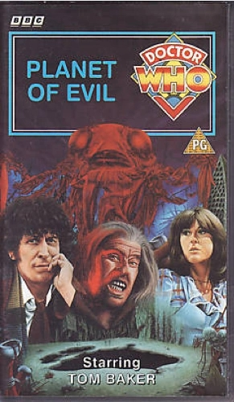
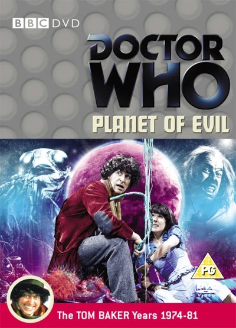

Эра Четвертого Доктора (13 сезон)
<<< НАЗАД ||| 2. Планета зла ||| ДАЛЬШЕ >>>
Субтитры: Русские и Английские |  |
|---|---|
с фанатским обновлением визуальных эффектов (cunningmunki) Субтитры: Русские и Английские | |
с обновлением визуальных эффектов (cunningmunki) Субтитры: отсутствуют | |
Planet of Evil
Дата выхода: 27 сентября - 18 октября 1975
Формат: 4 эпизода по 25 мин.
 |
ТАРДИС откликается на сигнал бедствия и приземляется на планете Зета Минор — в самой дальней точке исследованной вселенной. Там Доктор и Сара Джейн сталкиваются с невидимой угрозой, истощающей всё живое: она связана с добычей антиматерии и грозит перекинуться на другие миры. Пытаясь спасти уцелевших, Доктор идёт на рискованный шаг, чтобы изолировать источник опасности, а Сара Джейн в одиночку противостоит нарастающей тьме. Серия впервые полноценно показывает ТАРДИС изнутри после долгого перерыва и балансирует между космическим хоррором и научной этикой — а концепция угрозы из иной материи позже не раз всплывала в сериале.
 VHS - февраль 1994 |  DVD - 15 октября 2007 |  Blu-ray - 20 октября 2025 * Версия в нашей группе |
|---|


Трейлер: